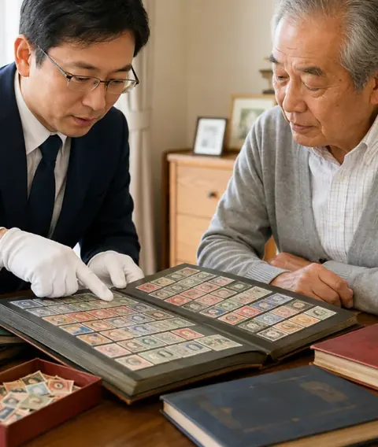
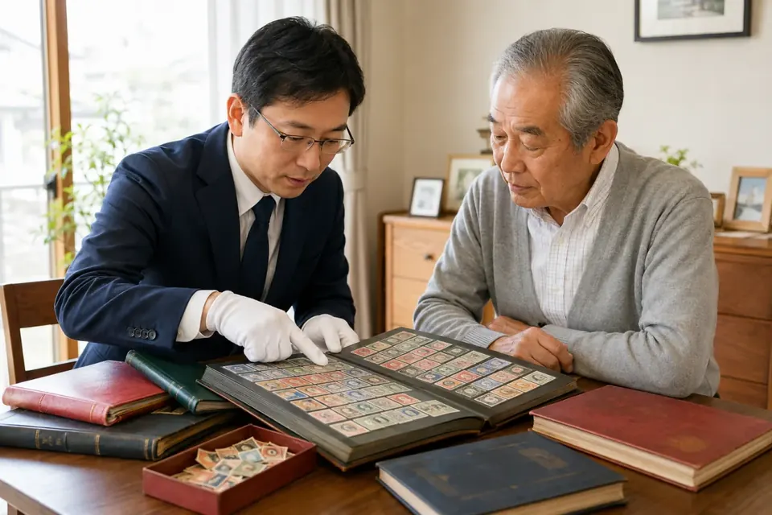

2026年10月更新
古い切手、
そのまま
処分していい？
切手買取
3社を比較
実家で見つかった切手アルバム。何が高いか分からなくても、買取対象と査定方法を調べてから相談できます。

- 比較3社
- 公式実績6例
- 査定無料3社
※写真はイメージです。実績・無料査定は各社公式サイトの掲載内容（2026年10月13日確認）。
PR本ページは広告・アフィリエイトリンクを含みます。アフィリエイトサイトのため、ウリエル・バイセル等のプロモーションを含みます。福ちゃんへのリンクは広告リンクではありません（2026年10月時点）。掲載順は編集部の掲載順で、買取価格の高さや満足度の順位ではありません（ランキング調査概要）。
 編集部
編集部※会話は編集部が作成した典型的な場面の例で、実在の利用者の口コミではありません。
切手買取の比較候補BEST3
各社が公開している
過去の買取実績の一部
ご注意：過去の複数点買取例で、個々の切手や将来の査定額を保証するものではありません。同じ切手を3社で実査定した比較ではありません。
横にスクロールできます
切手アルバムをまとめて
普通切手まとめてウリエル
買取価格100,000円※キャンペーン期間中の買取例（公式記載）
| 買取日 | 2021/12/26 |
|---|---|
| 地域・方法 | 東京都西東京市・出張買取 |
記念切手のシート
月に雁／見返り美人 5面シート福ちゃん
買取価格131,000円計27点・使用感やキズありの状態（公式記載）
| 買取日 | 2026/05/21 |
|---|---|
| 地域・方法 | 兵庫県・出張買取 |
中国切手が混ざっている
中華人民共和国切手展 小型シート福ちゃん
買取価格47,000円2点セット・黒点や汚れありの状態（公式記載）
| 買取日 | 2026/07/13 |
|---|---|
| 地域・方法 | 愛知県・出張買取 |
出典：ウリエル公式 切手買取ページ／バイセル公式 切手買取ページ・普通切手買取ページ／福ちゃん公式 切手買取ページ（いずれも2026年10月13日確認）
額面だけで判断しないほうがいい理由
同じ古い切手でも、発行時期・希少性・保存状態・シートかバラかで評価は変わります。額面だけで捨てたり交換したりする前に、買取対象として相談できるかを確かめましょう。

査定で見られやすい4つのポイント
- 発行時期：戦前の切手や古い記念切手など、年代によって扱いが変わる
- 希少性：発行枚数やコレクターからの人気
- 保存状態：汚れ・折れ・日焼け・裏のりの有無など
- シートかバラか：シート・小型シート・バラ・台紙貼りなど形の違い
切手買取を選ぶときに確認したい3つのこと
業者選びのチェックポイント
- ① 価値が分からない切手も相談できるか
- ② 自宅で査定を受けられるか（お住まいが出張の対象地域か）
- ③ 金額に納得できなければ売らずに済むか（キャンセル料の有無）
※査定額が高くなることを保証するチェックではありません。条件は各社公式サイトで最新の内容を確認してください。
切手買取3社の比較表タブで「対象の切手／買取方法／費用・地域・断るとき」を切り替え
| サービス | 主な対象 | 公式の案内（要点） | 詳細 |
|---|---|---|---|
| 1 | ○普通・記念・中国切手 | バラ・台紙貼り（アルバム）・価値の分からない切手・汚れや破損がある切手も相談できると案内。
| 詳細 |
| 2 | ○普通・記念・特殊・中国切手、はがき | 整理されていない切手・台紙貼り・バラもそのまま査定できるとFAQで案内。
| 詳細 |
| 3 | ○普通・記念・特殊・中国切手 | 切手帳やボストークなど保管形態もさまざまな切手を査定。仕分け不要、1点からでも相談と案内。
| 詳細 |
| 対象外・注意の例（公式記載） ウリエル：出張は対象エリア内でも一部地域で対応できない場合あり。 バイセル：中国切手以外の海外切手は買取不可。重大な損傷、偽造・コピー品などは対象外。状態の悪い切手の「買取保証」は出張・店頭限定（宅配は対象外）。 福ちゃん：状態によっては買取をお断りする場合あり。一部店舗は来店予約が必要。 | |||
買取方法の早見表宅配・催事の公式案内があるか（優劣ではありません）
- ✔ 出張・店舗・催事の3方法
- ✔ 出張は17都府県が対象
※配置は各社の切手買取ページで「宅配買取」「催事買取」の案内を確認できたか（2026年10月13日）による。バイセルと福ちゃんは同じ位置のため上下にずらして表示。「今回未確認」はサービスがないことの証明ではありません（基準は調査概要）。
お住まいと希望の方法で
2社を比べると条件の違いが分かります
ウリエルの出張対象地域なら：ウリエル × バイセル
台紙貼りのアルバムも、自宅でまとめて見てもらう
- 価値の分からない切手もそのまま
バラ・台紙貼り・汚れのある切手も相談対象と公式に記載。出張は対象17都府県のみ - 出張料・査定料は無料
納得できなければ断れ、キャンセル料はかからないと案内。
出張は対象エリアのみ
ウリエルの公式サイトで無料査定を申し込む
もう1社の見積りと条件を比べる
- 離島を除く全国に出張
出張・店頭・宅配から方法を選べます。 - 査定料・キャンセル料など各種無料
状態の悪い切手の買取保証は出張・店頭限定。
出張は離島を除く全国
バイセルの公式サイトで無料査定を申し込む
宅配を希望・ウリエルの対象地域外なら：バイセル × 福ちゃん
宅配でも、記念・中国切手の実例がある業者と比べる
- 出張・宅配・店舗の3方法
宅配キットを用意し、送料・振込手数料も無料と案内。 - 記念・中国切手の買取実例を公開
月に雁・見返り美人シートや中国切手の実例あり。状態により買取不可の場合あり
※2社に相談しても査定額が上がることを保証するものではありません。利用条件と見積りを比べるための行動です。
切手買取3社の詳細編集部の掲載順（順位の決め方）
1社だけで決めず、対象地域と方法が合う2社で見積りと条件を比べるのがおすすめです。
1ウリエル
台紙貼りの切手アルバムもまとめて相談！
出張料・査定料は無料（対象17都府県）

出張は対象エリアのみ
出張料・査定料無料公式サイトで申し込む
特徴
- 出張料・査定料は無料、その場で追加もOK※公式
- バラ・台紙貼り（アルバム）・価値の分からない切手もまとめて相談※公式
- 金額に納得できなければ断れる（キャンセル料なし）※公式
- 出張は関東・中部・近畿の16都府県＋岡山県のみ（一部地域除く）
※公式サイトで案内を確認できた項目＝5／今回未確認＝0。満足度や査定額の評価ではありません（基準は調査概要）
| 買取対象 | 出張地域 |
|---|---|
| 普通・記念切手、中国切手、バラ・シート・台紙貼り | 関東・中部・近畿の16都府県＋岡山県※一部地域を除く |
| 買取方法 | 費用 |
| 出張・店舗・催事※宅配は今回未確認 | 出張料・査定料 無料 |
| 受付時間 | 断るとき |
| 24時間受付※年末年始除く | キャンセル料なし |
出典：ウリエル公式 切手買取ページ（2026年10月13日確認）
横にスクロールできます
買取実績1
| 品目 | 桜切手などの普通切手まとめて（切手アルバム） |
|---|---|
| 買取価格 | 100,000円 |
| 買取日 | 2021/12/26 |
| 備考 | キャンペーン期間中の買取例 |
買取実績2
| 品目 | 赤猿切手を含む中国切手コレクション |
|---|---|
| 買取価格 | 150,000円 |
| 買取日 | 2021/12/15 |
| 備考 | 複数点のコレクション |
買取実績3
| 品目 | 見返り美人切手など切手コレクション |
|---|---|
| 買取価格 | 30,000円 |
| 買取日 | 2024/01/13 |
| 備考 | 丸まり・曲がりのある切手も含む |
過去の複数点の買取例です。同じ切手でも状態や時期で査定額は変わり、将来の金額を保証するものではありません。
出典：ウリエル公式 切手買取ページ（2026年10月13日確認）
編集部の注目ポイント
ウリエルは公式サイトで、バラ切手・台紙に貼られた切手・価値の分からない切手も相談対象として案内しています。実家で切手帳がまとめて見つかり、仕分ける前に一度見てもらいたい人に向いています。ただし出張は対象地域内のみなので、先に住所が対象か確認しましょう。
ウリエルの利用者の声（公式掲載）
 50代女性東京都板橋区
50代女性東京都板橋区ウリエル公式の普通切手買取ページに、実家から大量の切手が出てきて扱いに困り、出張買取を利用した方の声が掲載されています。対応の丁寧さについての感想です。
※ウリエル公式サイト掲載の利用者の声のテーマを編集部が紹介（文面の転載はしていません）。個人の感想で、結果を保証するものではありません。出典：ウリエル公式 普通切手買取ページ
こちら
出張は対象エリアのみ
出張料・査定料無料公式サイトはこちら
2バイセル
出張・店頭・宅配から方法を選べる！
出張は離島を除く全国に対応

出張は離島を除く全国
出張・店頭・宅配から選べる公式サイトで申し込む
特徴
- 離島を除く全国に出張買取※公式
- 出張・店頭・宅配の3つの買取方法、査定料・キャンセル料など各種無料※公式
- シミ・汚れ・台紙貼り・消印付きなども「買取保証」対象（出張・店頭限定）※公式
- 中国切手以外の海外切手は買取不可。宅配は買取保証の対象外
※公式サイトで案内を確認できた項目＝5／今回未確認＝0。満足度や査定額の評価ではありません（基準は調査概要）
| 買取対象 | 出張地域 |
|---|---|
| 普通・記念・特殊・中国切手、はがき※中国以外の海外切手は不可 | 離島を除く全国 |
| 買取方法 | 費用 |
| 出張・店頭・宅配 | 査定料・キャンセル料など各種無料 |
| 受付時間 | 断るとき |
| 電話は24時間365日受付 | 無料でキャンセル可能 |
出典：バイセル公式 切手買取ページ（2026年10月13日確認）
横にスクロールできます
買取実績1
| 品目 | 前島密（1円普通切手）／オオムラサキ（75円普通切手）など |
|---|---|
| 買取金額 | 22,000円 |
| 買取日 | 2025/08/01 |
| 備考 | 複数点の買取例 |
買取実績2
| 品目 | 普通切手「オシドリ」／普通切手「キジバト」など |
|---|---|
| 買取金額 | 15,300円 |
| 買取日 | 2025/05/23 |
| 備考 | 複数点の買取例 |
過去の複数点の買取例です。同じ切手でも状態や時期で査定額は変わり、将来の金額を保証するものではありません。
出典：バイセル公式 切手買取ページ・普通切手買取ページ（2026年10月13日確認）
編集部の注目ポイント
バイセルは出張・店頭・宅配の3つから方法を選べ、出張は離島を除く全国が対象です。ウリエルの対象地域外にお住まいの方や、家に来てもらうより宅配・店頭がいい方の比較候補になります。状態の悪い切手の買取保証は出張・店頭限定なので、汚れが気になる切手は方法選びに注意しましょう。
バイセルの利用者の声（公式掲載）
 60代女性東京都世田谷区
60代女性東京都世田谷区バイセル公式の切手買取ページに、出張買取で切手を見てもらい、切手についての説明が分かりやすかったという趣旨の声が掲載されています。
※バイセル公式サイト掲載の利用者の声のテーマを編集部が紹介（文面の転載はしていません）。個人の感想で、結果を保証するものではありません。出典：バイセル公式 切手買取ページ
こちら
出張は離島を除く全国
査定料・キャンセル料無料公式サイトはこちら
3福ちゃん
記念・特殊・中国切手が混ざっていても相談！
査定不成立でもキャンセル料・査定料なし

特徴
- 普通・記念・特殊・中国切手などを査定※公式
- 出張・宅配・店舗の3つの買取方法（一部店舗は予約制）※公式
- 訪問料・査定料・送料・振込手数料は無料、不成立でもキャンセル料なし※公式
- 状態によっては買取をお断りする場合あり
※公式サイトで案内を確認できた項目＝5／今回未確認＝0。「店頭」は店舗買取。満足度や査定額の評価ではありません（基準は調査概要）
| 買取対象 | 出張地域 |
|---|---|
| 普通・記念・特殊・中国切手など※状態により買取不可あり | 申込時に公式で確認※今回は全国の範囲を未確認 |
| 買取方法 | 費用 |
| 出張・宅配・店舗 | 訪問料・査定料・送料・振込手数料 無料 |
| 受付時間 | 断るとき |
| 電話 8:00〜20:00※年末年始除く／申込は24時間 | キャンセル料・査定料なし |
出典：福ちゃん公式 切手買取ページ（2026年10月13日確認）。福ちゃんのASP条件は未確認です。
横にスクロールできます
買取実績1
| 品目 | 切手趣味週間 月に雁／見返り美人 5面シート（計27点） |
|---|---|
| 買取価格 | 131,000円 |
| 買取日 | 2026/05/21 |
| 備考 | 使用感・キズが目立つ状態と公式に記載 |
買取実績2
| 品目 | 中国切手 中華人民共和国切手展・雲南のツバキ 小型シート2点 |
|---|---|
| 買取価格 | 47,000円 |
| 買取日 | 2026/07/13 |
| 備考 | 黒点・保管時の汚れありと公式に記載 |
過去の複数点の買取例です。同じ切手でも状態や時期で査定額は変わり、将来の金額を保証するものではありません。
出典：福ちゃん公式 切手買取ページ（2026年10月13日確認）
編集部の注目ポイント
福ちゃんは公式サイトで記念切手・中国切手などの買取実例を日付・地域つきで公開しています。アルバムの中にいろいろな種類が混ざっているコレクションの比較候補です。出張の対応地域は申込時に確認しましょう。
福ちゃんの利用者の声（公式掲載）
 40代大阪府大阪市
40代大阪府大阪市福ちゃん公式の大阪府の切手買取ページに、遺品整理で出てきた記念切手を出張買取してもらった方の声が掲載されています。
※福ちゃん公式サイト掲載の利用者の声のテーマを編集部が紹介（文面の転載はしていません）。個人の感想で、結果を保証するものではありません。出典：福ちゃん公式 大阪府の切手買取ページ
こちら
比較の続きはこちら
自分に合う業者を診断で確認する
結論：まず確認する順番
大量の切手がある場合は、まずウリエルの出張対象地域を確認。地域外、または宅配買取を希望する場合はバイセル・福ちゃんも比較しましょう。
※価格や対応を保証するものではありません。
出張査定の一般的な流れ
申し込み・日程調整
電話や申込フォームで、切手のおおよその量と希望日を伝えます。お住まいが出張の対象地域かもこの時点で確認しましょう。
自宅で査定
査定士が切手を確認します。アルバムから外したり仕分けたりせず、そのままの状態で見てもらえるかは各社の案内を確認してください。

※写真はイメージです 金額に納得したら売却
提示額に納得できれば売却します。納得できなければ断ることもできます（3社ともキャンセル料なしと案内）。本人確認書類が必要です。
※写真はイメージです
迷ったらまずは
この2社から確認しよう
記念・中国切手が多い方は、3位の福ちゃんの確認ポイントもあわせてご覧ください。
切手買取のよくある質問
バラ切手や台紙に貼ったままの切手も相談できますか？
3社とも公式サイトで、バラ切手や台紙貼り・アルバムの切手を相談できると案内しています。外したり仕分けたりする前に、そのまま相談しましょう。
査定額に納得できなければ断れますか？
3社とも、提示額に納得できない場合は断れて、キャンセル料はかからないと案内しています（2026年10月13日確認）。
ウリエルの出張エリア外に住んでいる場合は？
ウリエルの出張は公式掲載の17都府県が対象です。対象外の地域なら、離島を除く全国に出張するバイセルや、宅配・店舗もある福ちゃんを比べてください。
汚れや破れがある切手も売れますか？
各社とも状態の悪い切手も相談を受け付けていますが、重大な損傷などは買取できない場合があります。バイセルの「買取保証」は出張・店頭限定です。
このページの順位はどう決めていますか？
編集部の掲載順で、買取価格・満足度の順位や、同じ切手を3社で査定した結果ではありません。詳しくはランキング調査概要をご覧ください。